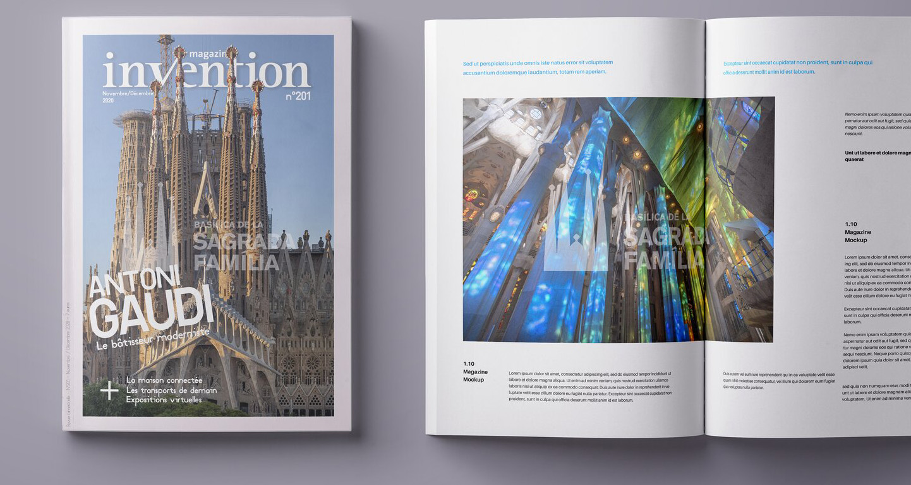

L’intention et la réalisation
En tant que rédacteur pour la revue Invention Magazine, j’ai proposé une nouvelle couverture et une nouvelle mise en page des textes. J’ai détouré les pointes de la Sagrada Familia pour qu’elles épousent le logo de la revue. J’ai ajouté des marges blanches sur les côtés de la couverture pour renforcer l’aspect prestigieux du magazine.

Afin de rendre les informations du numéro plus lisibles, j’ai revu la hiérarchie des titres : le sujet principal apparaît en premier, suivi des sujets secondaires présentés derrière le signe « + ».
J’ai réutilisé la marge de la couverture pour y placer les informations tarifaires. J’ai repositionné les indications de date sous le logo de la revue pour qu’elles soient immédiatement visibles.
Cette maquette, réalisée sur Photoshop, avait pour ambition de rendre la revue moins austère. L’objectif principal était de faire correspondre son style graphique à son contenu de vulgarisation et d’actualité culturelle.
Ce modèle a vocation à être facilement adapté à chaque numéro et à servir d’inspiration aux graphistes pour d’autres propositions.